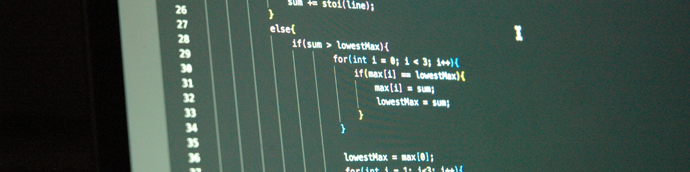

Hi, I'm Matt Boeren, a 22-year-old fullstack software developer with a passion for solving problems through clean and efficient code. My journey began at 14 when I bought an Arduino kit for school, and ever since, I've been hooked on building projects that bring ideas to life.
Today, I work as a fullstack developer, specializing in .NET on the back-end while also handling front-end development to deliver complete, well-rounded solutions. I have hands-on experience with JavaScript, .NET, Java and PHP plus working knowledge of Swift and C++. On the hardware side, I've also built small projects using Arduino and Raspberry Pi. On the database side, my knowledge ranges from classic SQL databases to NoSQL solutions like MongoDB.
Alongside my full-time role, I freelance as a software developer after hours, taking on new challenges whether it's building efficient systems, creating custom solutions, or contributing to innovative projects. If you're looking for someone motivated, versatile, and ready to deliver, I'd love to collaborate.